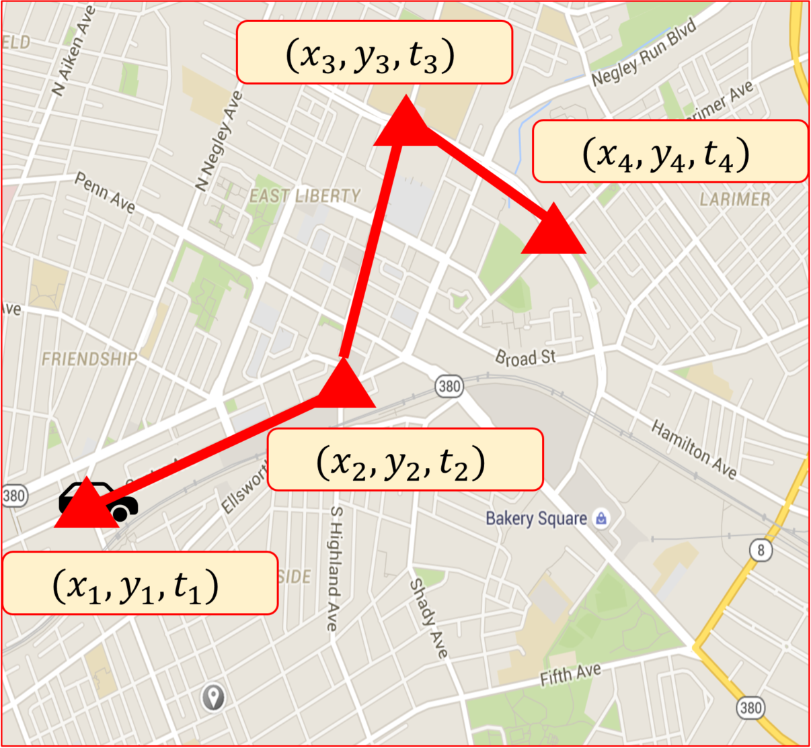
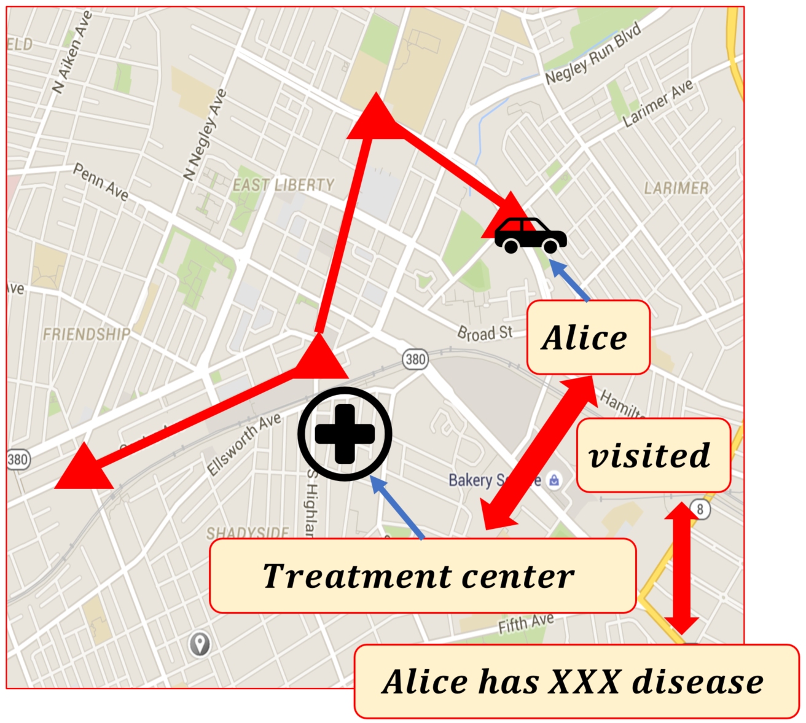
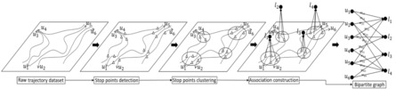
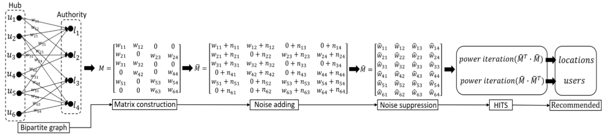

Overview

DiffTrajectory is a differentially private trajectory analysis algorithm for points-of-interest recommendation to users that aims at maximizing the accuracy of the recommendation results while protecting the privacy of the exposed trajectories with differential privacy guarantees.
DiffTrajectory can both:
- Do points-of-interest recommendation by analyzing the trajectory dataset.
- Protect the privacy of the exposed trajectories with differential privacy guarantees.
Motivation

Trajectory-based travel recommendation:
- Trajectories of an individual mobile user can be analyzed to understand her personal travel recommendations. The mobile users implicitly recommend their visited places to the new visitors.
- Aggregate analysis of historical trajectory data belonging to different mobile users can provide more generalized travel recommendations.
Location information of the travel destination is often associated with a semantic meaning. The disclosure of the association between a mobile user and such a location may reveal private information such as the health conditions.
Algorithm
First phase: User-location bipartite graph representation:
- Raw trajectory dataset.
- Stop points detection.
- Stop points clustering.
- Association construction.
- Bipartite graph.

Second phase: Differentially private mining algorithm:
- Matrix construction.
- Noise addition.
- Noise suppression.
- Hyperlink-Induced Topic Search (HITS).

Publications
- Chao Li, Balaji Palanisamy and James Joshi, "Differentially Private Trajectory Analysis for Points-of-Interest Recommendation", Proc. of 6th IEEE International Congress on Big Data (BigData Congress 2017), Honolulu, USA. (Best Paper Award). [PDF]